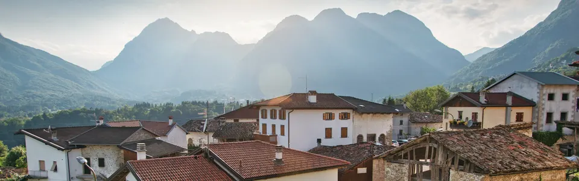

Lungis
Ein Ortsteil von Socchieve, in Karnien
Das Dorf
Sehenswertes und Aktivitäten in Lungis
Wie das benachbarte Feltrone wird Lungis von vielen Wegen durchzogen, darunter die Mountainbike-Strecke, die alle Ortsteile der Gemeinde verbindet. Im Dorf gibt es den Agriturismo In Già und die Bar mit Lebensmittelladen Al Cervo, und hier beginnt der Rundweg Anello delle Frazioni.
130Einwohner
554m ü. M.
2Wanderwege
2Lokale
Ausblicke
Lungis in Bildern
Wanderwege ab dem Dorf
Essen und Trinken
- Agriturismo In Già
- Bar, Lebensmittel und Tabak Al Cervo · Tel. 0433 80007
Übernachten in Lungis
Die Häuser des Albergo Diffuso

Socchieve und seine Dörfer